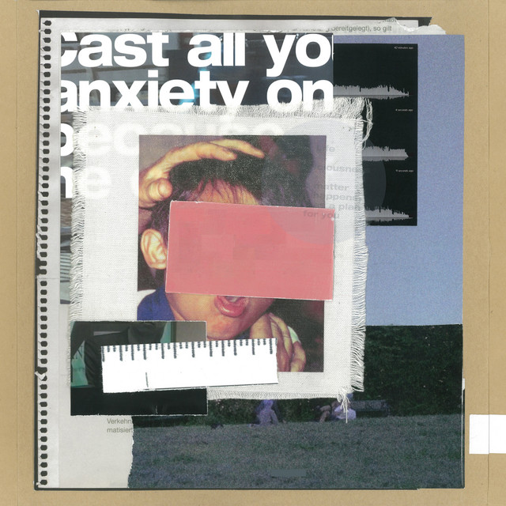
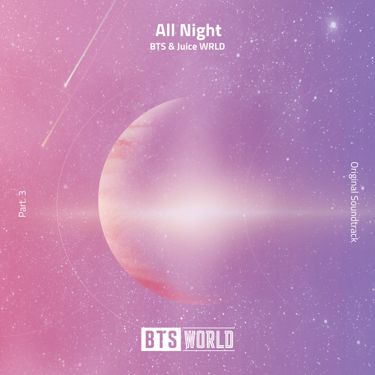
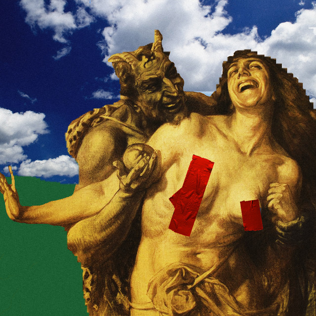
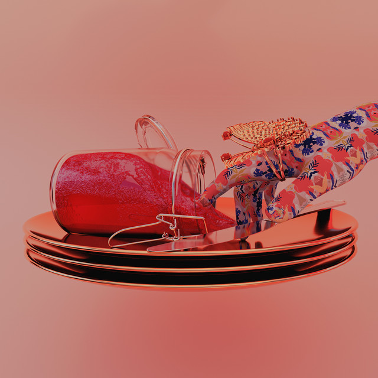
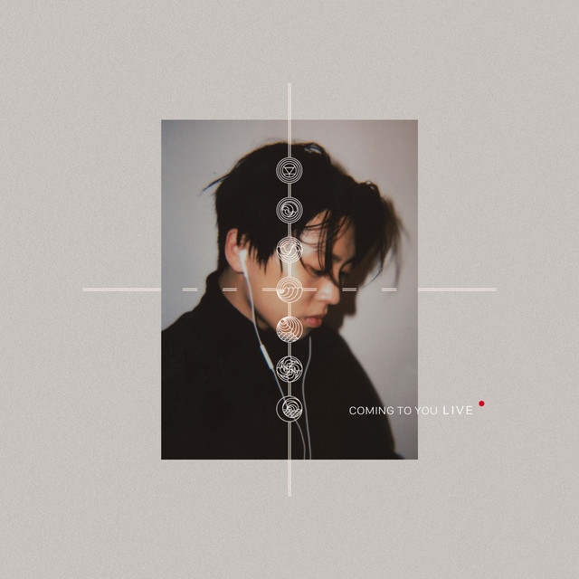
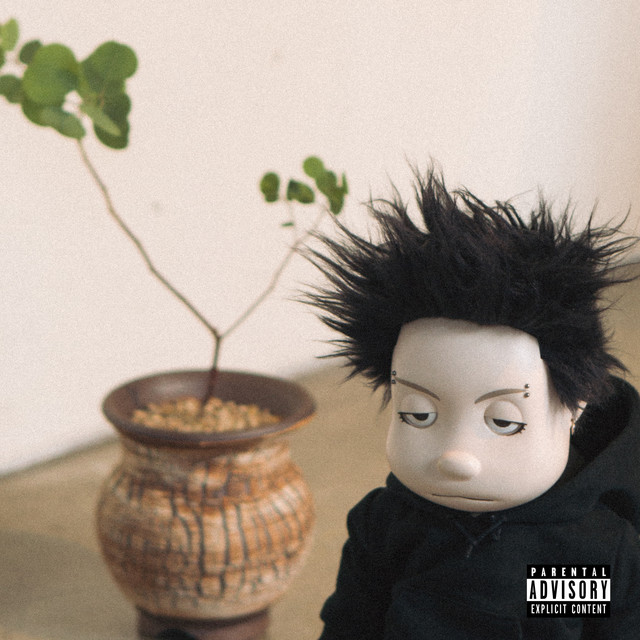
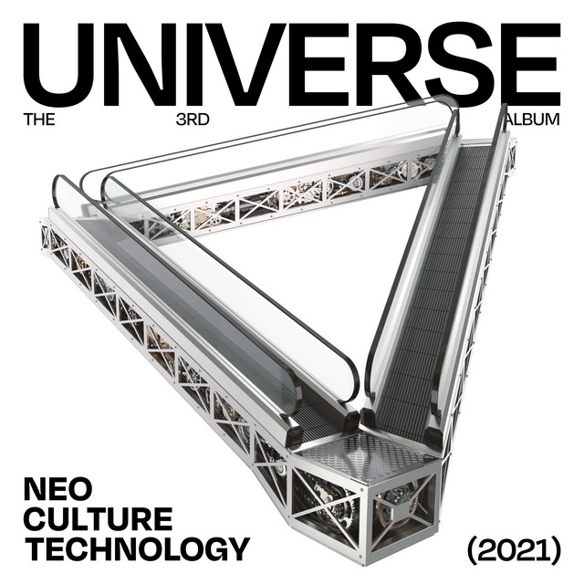
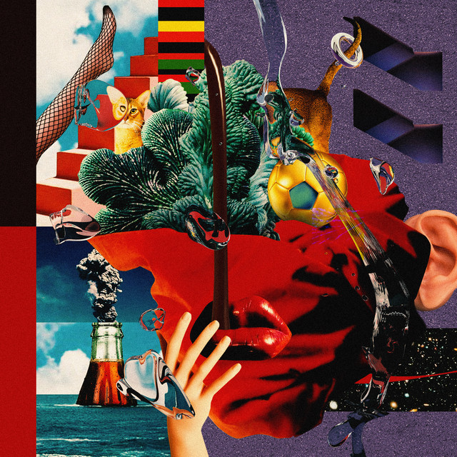
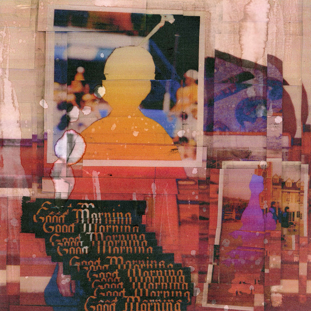

자유 속에 쳐진 바리케이드 yeah. Counting stars
밤하늘에 펄. We keep all the party in this room all night
We don't wanna put it on the brake, hold tight. Your love, your love, your love (I want that). 날 안아줘 my baby 바보 같은 나. I'll love you if you let me, baby. Love the textures of your mind (Yeah), tell me that it’s all of mine (All of mine).















This liquors got me faded
talking crazy, its got me thinking bout you
how are you lately? Don't know why you come through in my mind 꿈속에선 닿으면 사라질 듯한. Now I’m feelin’ like a like a shark 버스타, 어부바. 어디 도 못가 I'm in love. Oh no, I don’t trust nobody anymore, oh lord, I don’t trust nobody anymore. My baby says she wanna dance with a ghost she wants to leave me, uh? Lock the door door door door, sounds like 똑 똑 똑 똑. 표현이 서툴렀던 아이 천천히 알아가는 사이. You’re the only one I need you 24 hours, 너의 향기는 아름다움의 symbol 마릴린 먼로.